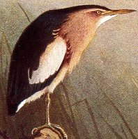

Monday, September the 6th, 2004
back to: title, date or indexes
Most readers will be aware how irksome it is to be trapped in a wind tunnel with an enormous bittern, especially when a newly-developed nerve gas is being pumped into the tunnel at the same time. For the few of you who are unfamiliar with this situation, further information can be found by reading chapter twelve of Unspeakable Desolation Pouring Down From The Stars, our hugely exciting weekly serial, which appears today.
If you are unsure whether or not you have ever been trapped in a wind tunnel with an enormous bittern, this picture may help jog your memory.

An absolutely gigantic bittern (not to scale)